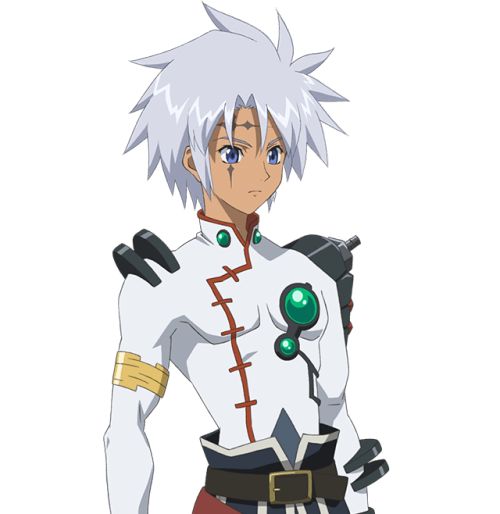
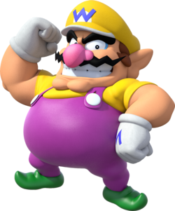
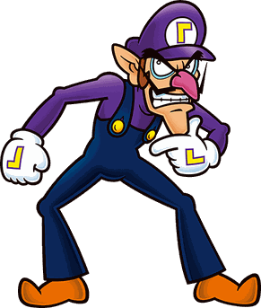
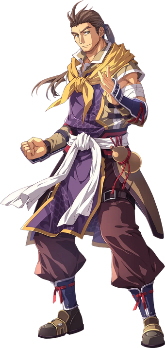
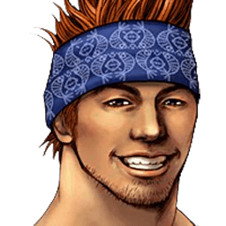

Our team looks pretty weird from the outside, but on the inside, we manage to keep ourselves together and pull through many games. Our team consists of five-star players, each with their own strengths, and each contributes something to the team in some way. We have Senel, Wario, Waluigi, Zin, and Wakka. Together, we formed the dodgeball team known as the Dodgy Drifters. Below, you'll see more info about our players:

Senel would be great for the team because he’s got strength. He can lift things twice his size and chuck them around like it's nothing. This means that he has one heck of an arm, and with an arm like his, he can throw like a truck. He’s also rather quick on his feet, and can catch decently well. He’s one of the more balanced members of the team.

Wario may not be the smartest man alive, and he is rather quick to anger. He also is not the fastest person on the court. But what he lacks in speed and intelligence, he more than makes up for in terms of raw strength. He has quite the iron grip, letting him able to hold the ball tightly. He also has quite the arm, although it takes him a bit of time to get ready. If he lets it loose though, the other team is in trouble.

Waluigi is rather lanky and lacks a lot of muscle. His throws leave much to be desired in terms of power. What he does have though is high speed and less body mass. Due to his skinny nature, he can move rather quickly and dodge a lot of balls, making him perfect for baiting the opposing teams. He is also rather smart and can come up with ploys to distract the opposing teams and give us an advantage.

If there’s one distinguishing feature about Zin that makes him stand out from the others, it’s his size. He was known as “Zin the Immoveable” at one point in time, due to his size making him hard to move. The one flaw that he has is that, due to his size, it makes him a big target. He more than makes up for it with his strength, especially his catching ability. He is able to catch an incoming ball with speed and precision, and won’t even flinch, even if it comes to him with blazing speeds.

Wakka here is a pretty good ball player. What he has over everyone else is his experience in the world of sports. He was a player of a sport known as Blitz Ball and even led his previous team to a championship victory. Due to this experience, Wakka has skills in ball throwing, passing a ball to a teammate, dodging, and catching. Out of everyone, he is the most well rounded and can come up with strategies to lead the team to victory.